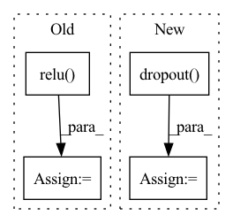

Pattern ID :2112
Before Change
// ]
def forward(self, x):
x = self.pool(F.relu( self.conv1(x)) )
x = self.pool(F.relu(self.conv2(x)))
x = x.view(-1, 16 * 5 * 5)
x = F.relu(self.fc1(x))
x = F.relu(self.fc2(x))
x = self.fc3(x)
x = F.log_softmax(x, dim=1)
return x
After Change
// The last hidden state is taken
out = torch.relu_(self.fc1(out[:,-1,:]))
out = self.dropout( out)
out = torch.sigmoid(self.fc2(out))
return out
In pattern: SUPERPATTERN
Frequency: 5
Non-data size: 4
Instances Fragment ID: 13974128
Project Name: tsingz0/pfl-non-iid
Commit Name: 2166a81ffe05bb2c68c8b457df8c2e1fd6a8be02
Time: 2021-07-01
Author: 2719584131@qq.com
File Name: system/flcore/trainmodel/models.py
M Class Name: CNNCifar
N Class Name: LSTMNet
M Method Name: forward(2)
N Method Name: forward(2)
M Parent Class: nn.Module
N Parent Class: nn.Module
M File Name: system/flcore/trainmodel/models.py
N File Name: system/flcore/trainmodel/models.py
M Start Line: 194
M End Line: 201
N Start Line: 388
N End Line: 417
Before Change
x = F.relu(self.pool(self.conv2(x)))
x = x.view(-1, 16 * 5 * 5)
x = F.relu(self.fc1(x))
x = F.relu( self.fc2(x))
x = self.fc3(x)
return x
After Change
// print(x.shape)
x = x.view(-1, 20 * 30 * 30)
x = F.relu(self.fc1(x))
x = F.dropout( x, training=self.training)
x = self.fc2(x)
return x
Fragment ID: 13974127
Project Name: abdullahselek/plant-disease-classification-pytorch
Commit Name: d9334944630cdb79c98f1ab59b926555a52d2dd9
Time: 2020-11-08
Author: abdullahselek@gmail.com
File Name: plant_disease_classification_pytorch/network.py
M Class Name: CNN
N Class Name: CNN
M Method Name: forward(2)
N Method Name: forward(2)
M Parent Class: nn.Module
N Parent Class: nn.Module
M File Name: plant_disease_classification_pytorch/network.py
N File Name: plant_disease_classification_pytorch/network.py
M Start Line: 28
M End Line: 36
N Start Line: 20
N End Line: 27
Before Change
rnn_hidden: hidden state of the RNN cell.
rnn_hidden = self.rnn(inputs, rnn_hidden)
outputs = self.relu( rnn_hidden)
outputs = self.linear(outputs)
outputs = self.sigmoid(outputs)
return outputs, rnn_hidden
After Change
def forward(self, inputs):
// rnn_hidden = self.rnn(inputs, rnn_hidden)
// outputs = self.relu(rnn_hidden)
outputs = self.dropout( inputs)
outputs = self.linear(outputs)
outputs = self.sigmoid(outputs)
return outputs Fragment ID: 13974126
Project Name: coqui-ai/tts
Commit Name: c8a552e62763ed7172b98822bb65838d72fbdb7b
Time: 2018-11-02
Author: egolge@mozilla.com
File Name: layers/tacotron.py
M Class Name: StopNet
N Class Name: StopNet
M Method Name: forward(2)
N Method Name: forward(3)
M Parent Class: nn.Module
N Parent Class: nn.Module
M File Name: layers/tacotron.py
N File Name: layers/tacotron.py
M Start Line: 428
M End Line: 438
N Start Line: 462
N End Line: 466
Before Change
embed = self.embedding(x) // [batch_size, seq_len, embeding]=[64, 32, 64]
out, _ = self.lstm(embed)
out = torch.cat((embed, out), 2)
out = F.relu( out)
out = out.permute(0, 2, 1)
out = self.maxpool(out).squeeze()
out = self.fc(out)
After Change
maxpool_input = fc_output.permute(0, 2, 1) // [batch_size, hidden_size*2, max_seq_len]
maxpool_output = self.maxpool(maxpool_input).squeeze() // [batch_size, hidden_size*2]
cls_input = self.dropout( maxpool_output)
out = self.classfier(cls_input)
return out Fragment ID: 13974120
Project Name: ygzwqzd/lamda-ssl
Commit Name: 2bff86050026e23fa26339d45b62e1077805a3d6
Time: 2022-02-19
Author: 1129198222@qq.com
File Name: Semi_sklearn/Network/TextRCNN.py
M Class Name: TextRCNN
N Class Name: TextRCNN
M Method Name: forward(2)
N Method Name: forward(2)
M Parent Class: nn.Module
N Parent Class: nn.Module
M File Name: Semi_sklearn/Network/TextRCNN.py
N File Name: Semi_sklearn/Network/TextRCNN.py
M Start Line: 23
M End Line: 31
N Start Line: 31
N End Line: 39
Before Change
residual = x
x = self.layer_norm(x)
x = self.w_2(F.relu( self.w_1(x)) )
x = self.dropout(x)
x += residual
return x
After Change
x = self.act(x)
x = self.dropout(x)
x = self.w_2(x)
x = self.dropout( x)
return x
Fragment ID: 13974123
Project Name: open-mmlab/mmocr
Commit Name: 3b443cf6f949407b8de6d13feb8614c4dfd421ed
Time: 2021-04-05
Author: yuexy@users.noreply.github.com
File Name: mmocr/models/textrecog/layers/transformer_layer.py
M Class Name: PositionwiseFeedForward
N Class Name: PositionwiseFeedForward
M Method Name: forward(2)
N Method Name: forward(2)
M Parent Class: nn.Module
N Parent Class: nn.Module
M File Name: mmocr/models/textrecog/layers/transformer_layer.py
N File Name: mmocr/models/textrecog/layers/transformer_layer.py
M Start Line: 123
M End Line: 128
N Start Line: 183
N End Line: 187